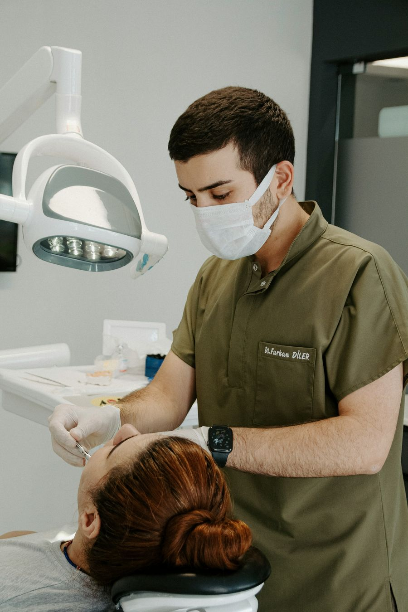

Limpieza dental
Eliminamos el sarro y la placa bacteriana para prevenir caries y enfermedades de las encías. Recomendamos hacerla cada seis meses.
Ofrecemos tratamientos para toda la familia, desde controles de rutina hasta soluciones de rehabilitación oral.

Eliminamos el sarro y la placa bacteriana para prevenir caries y enfermedades de las encías. Recomendamos hacerla cada seis meses.
Corregimos la posición de los dientes con brackets metálicos, estéticos o alineadores invisibles.
Reemplazamos piezas perdidas con implantes de titanio que se ven y funcionan como dientes naturales.
Aclaramos el color de los dientes de forma segura, en el consultorio o con un kit para usar en casa.
Atendemos a los más chicos en un ambiente amigable, con foco en la prevención y en crear buenos hábitos.
Tratamos el interior del diente cuando el nervio está dañado, para conservar la pieza y aliviar el dolor.